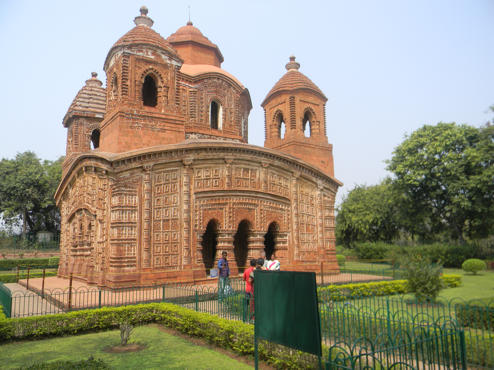

HOME | Kalimpong | Gorumara | Bishnupur | Purulia | Digha
Bishnupur is a town in the "Bankura" District of West Bengal and located at about 132 km from Kolkata. It is famous for its terracotta temples and Baluchari sarees. It prospered in the 17th and early 18th centuries. The Terracotta tiles depict stories from "Ramayana" and "Mahabharata". The Temples like the "Shyam Ray Temple", the "Twin Shrines of Jorbangla" and the "Rasmancha" are a must visit. Apart from its heritage, Bishnupur is also known for its traditional handloom sarees, pottery, artifacts and even jewellery made of terracotta. It was much later in 994 AD that the place was named "Bishnupur". The name is derived from the name of the Hindu God "Vishnu". At that time the administration of Bengal was in the hands of Shah Jahan and his son Shuja. It was during this period that the "Jorbangla Temple" was erected.
